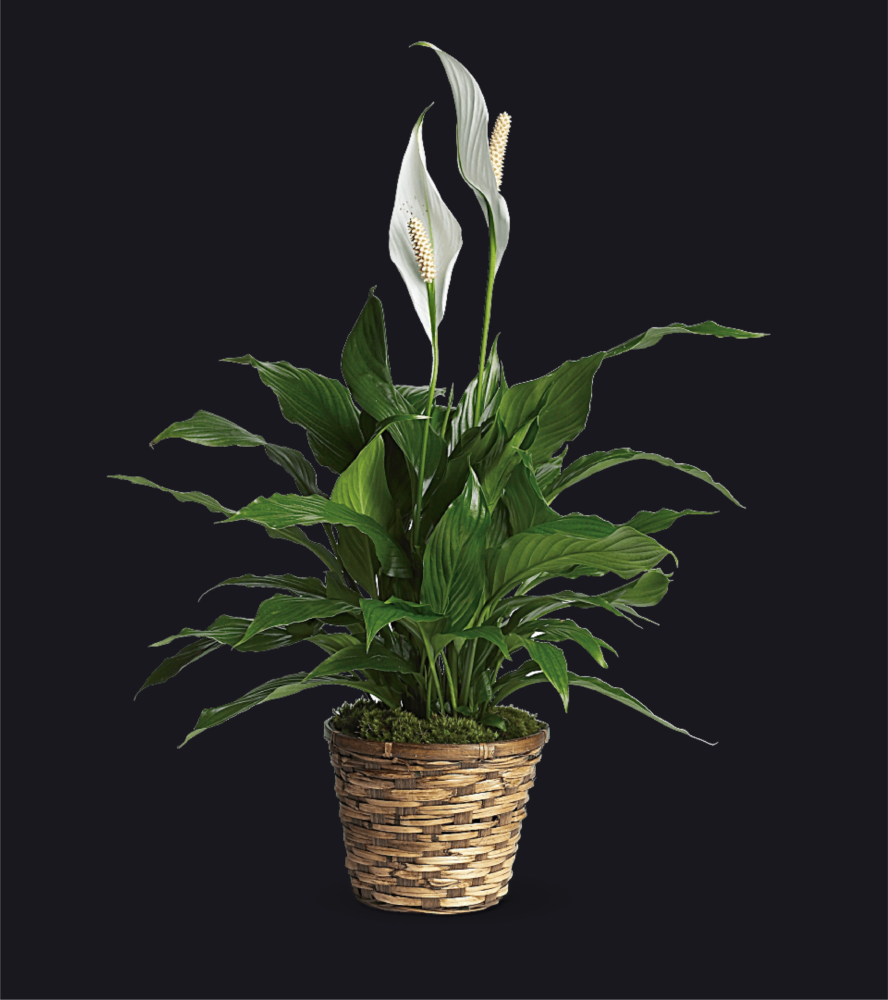
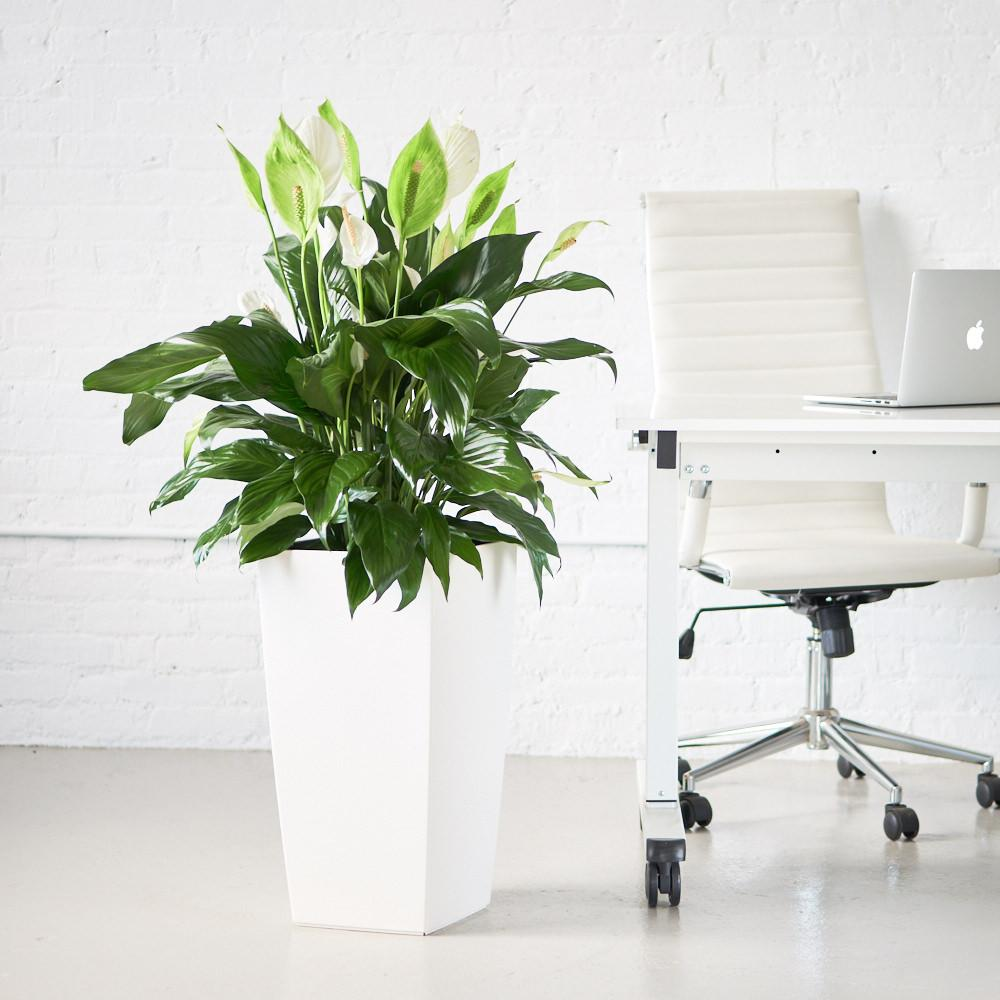
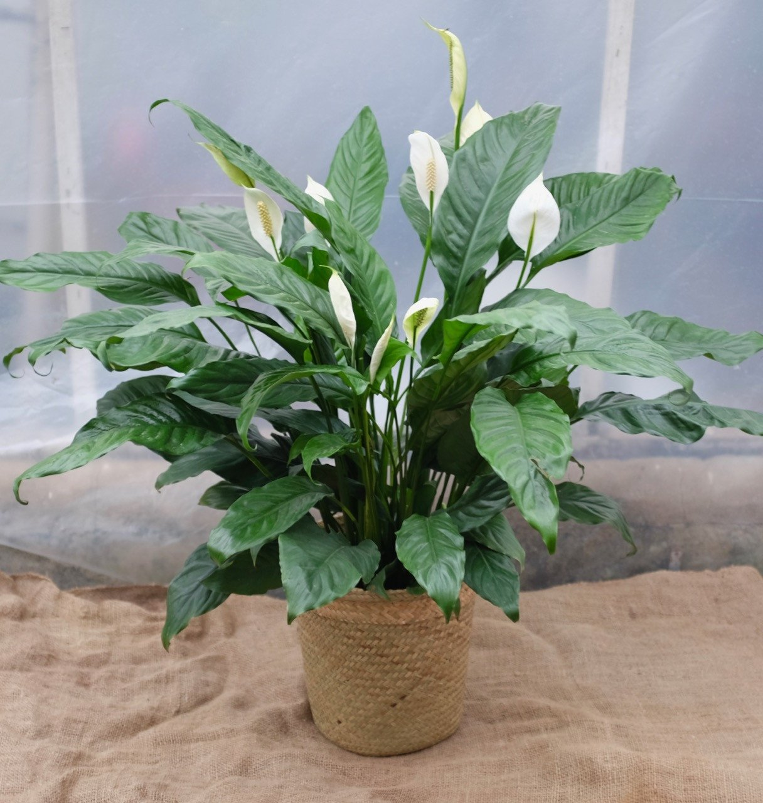
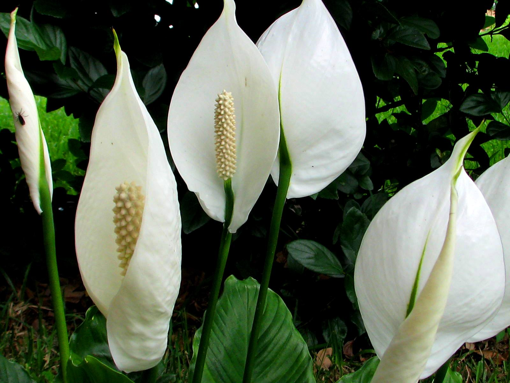
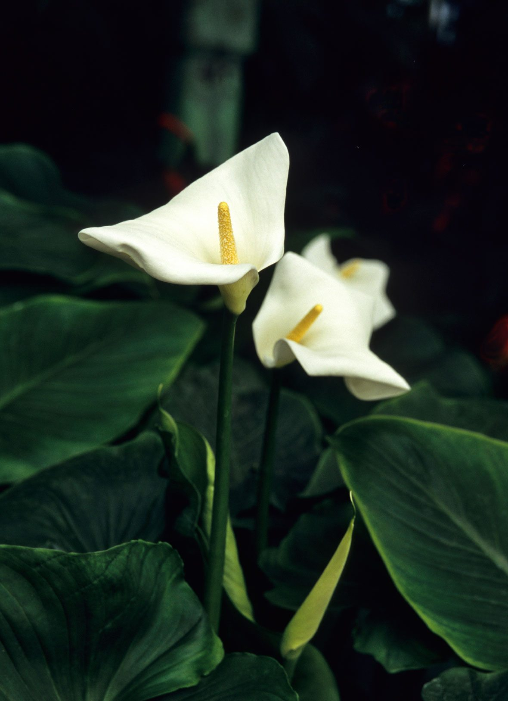

Peace lilies have bold dark green leaves, and flower beautiful large white blooms all year round. They are tropical plants that usually live on the forest floor, and can grow up to 6 feet tall.
Warning! Please note that peace lilies are poisonous if ingested because all parts of the plant contain calcium oxalate. Keep peace lilies out of reach of children and pets.
Light: Peace lilies need medium to low light. For example, they would not do well with direct afternoon sunlight, but a bright room is ideal. While they can tolerate being in dim light, a sign that they are not getting enough light is a lack of flowers.
Water: One reason why peace lilies are popular with beginner plant raisers is because they only need to be watered when the top of the soil is dry. Short periods of dry soil are okay, but if they are not watered as needed, their leaves will turn brown. Alternatively, if your peace lily is grown in water, the base of the plant should be above the water line to avoid getting the leaves from being too wet.
Fun fact: Peace lilies, as signified by their name, represent peace. Their white flowers can represent the white flag of surrender, as well as purity and/or innocence.
. . .




